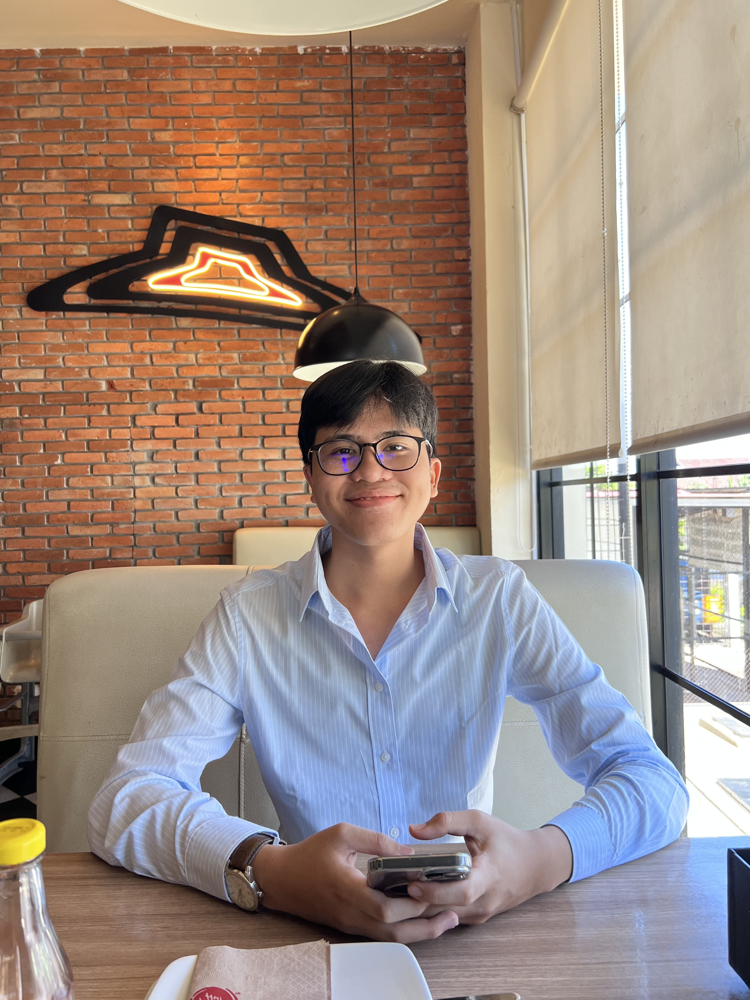

Welcome
BIODATA DIRI

Selamat Datang di Web Pertama Saya
BIODATA DIRI

NAMA:Jhon Lucky Silalahi
Tempat Lahir: Bengkulu
Tanggal Lahir: 29 Juli 2007
Alamat: Jalan Sukamaju, Kampung Melayu, Bengkulu
Email:jhonlucky.edu@gmail.com
Hobi:Baca Buku
Makanan Kesukaan: Ayam Goreng
Moto Hidup:Do your Best, and Let God do the rest
Kesan dan Pesan:Sangat Senang masih hidup